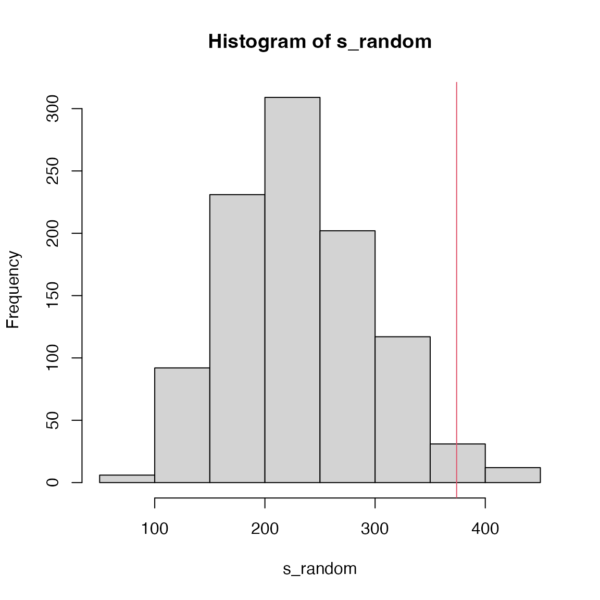
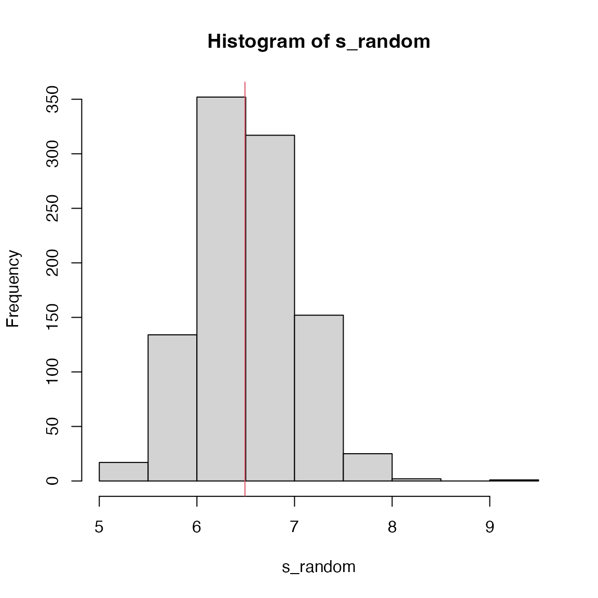
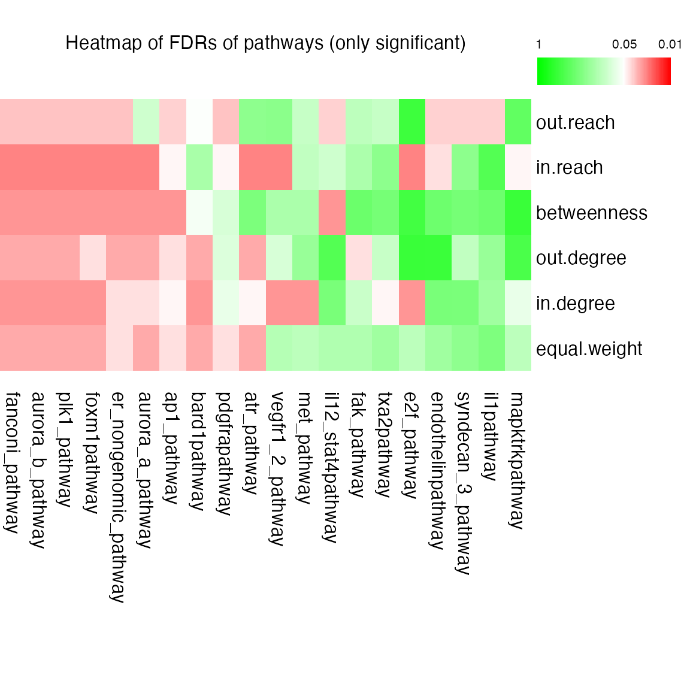

Topic 4-01: Centrality-based pathway enrichment analysis
Zuguang Gu z.gu@dkfz.de
2025-05-30
Source:vignettes/topic4_01_centrality.Rmd
topic4_01_centrality.RmdORA extension
We start with a differential gene list and an universe gene list. Let’s first convert them to EntreZ IDs:
library(GSEAtopics)
library(org.Hs.eg.db)
genes = convert_to_entrez(genes)## gene id might be SYMBOL (p = 0.860 )
universe = convert_to_entrez(universe)## gene id might be SYMBOL (p = 0.890 )The most important part in topology-based pathway enrichment analysis is that we need pathways in the network representations. The KEGGgraph can read network data of KEGG pathways and convert it to proper format.
library(KEGGgraph)
df = parseKGML2DataFrame(system.file("extdata/hsa04010.xml", package = "KEGGgraph"))
head(df)## from to type subtype
## 1 hsa:5923 hsa:22800 PPrel activation
## 2 hsa:5923 hsa:22808 PPrel activation
## 3 hsa:5923 hsa:3265 PPrel activation
## 4 hsa:5923 hsa:3845 PPrel activation
## 5 hsa:5923 hsa:4893 PPrel activation
## 6 hsa:5923 hsa:6237 PPrel activationWe only need the first two columns (from and to) to construct the network.
library(igraph)
g = graph_from_data_frame(df[, 1:2])
g## IGRAPH 8e85dc8 DN-- 262 1029 --
## + attr: name (v/c)
## + edges from 8e85dc8 (vertex names):
## [1] 5923 ->22800 5923 ->22808 5923 ->3265 5923 ->3845 5923 ->4893
## [6] 5923 ->6237 5924 ->22800 5924 ->22808 5924 ->3265 5924 ->3845
## [11] 5924 ->4893 5924 ->6237 11072->5594 11072->5594 11072->5595
## [16] 11072->5595 11072->5599 11072->5599 11072->5601 11072->5601
## [21] 11072->5602 11072->5602 11072->1432 11072->1432 11072->5600
## [26] 11072->5600 11072->5603 11072->5603 11072->6300 11072->6300
## [31] 11221->5594 11221->5594 11221->5595 11221->5595 11221->5599
## [36] 11221->5599 11221->5601 11221->5601 11221->5602 11221->5602
## + ... omitted several edgesThe igraph package provides many different
centrality methods. Here we take degree() as an
example:
d = degree(g)Make sure all genes in d are within
universe.
The statistic for the gene set is
or
In the random permutation, we randomly pick
length(genes) as differential genes.
s_random = numeric(1000)
for(i in 1:1000) {
genes_random = sample(universe, length(genes))
cn = intersect(genes_random, names(d))
s_random[i] = sum(d[cn])
}P-value is calculated in the normal way.

## [1] 0.023GSEA-extension
We only consider the gene permutation process. We generate a vector of gene scores.
As d has already been restricted within
universe, the set-level statistic is calculated as
In the gene permutation, the differential scores are randomly assigned to genes.
s_random = numeric(1000)
for(i in 1:1000) {
score_random = sample(score, length(d))
s_random[i] = mean(abs(score_random)*d)
}
hist(s_random)
abline(v = s, col = 2)
## [1] 0.504Question: can you do a two-sided test?
Helper functions
Two helper funtions are provided:
ora_kegg_topology(genes, universe, centrality = igraph::degree, verbose = FALSE) |> head()## pathway k s n_gs log2fe z_score p_value p_adjust
## 1 hsa03460 16 82 31 2.4471071 6.523777 0.000 0.00000000
## 2 hsa04010 51 1085 285 1.0874550 4.851782 0.000 0.00000000
## 3 hsa04114 23 490 108 1.5614595 5.167157 0.000 0.00000000
## 4 hsa04218 28 251 139 0.9693699 3.345670 0.000 0.00000000
## 5 hsa00071 13 122 40 1.6274315 4.223759 0.001 0.02833333
## 6 hsa04014 35 812 214 1.1750747 4.572617 0.001 0.02833333
## description
## 1 Fanconi anemia pathway - Homo sapiens (human)
## 2 MAPK signaling pathway - Homo sapiens (human)
## 3 Oocyte meiosis - Homo sapiens (human)
## 4 Cellular senescence - Homo sapiens (human)
## 5 Fatty acid degradation - Homo sapiens (human)
## 6 Ras signaling pathway - Homo sapiens (human)
gsea_kegg_topology(score, centrality = igraph::degree, verbose = FALSE) |> head()## pathway s n_gs log2fe z_score p_value p_adjust
## 1 hsa04260 3.036433 21 0.6631036 2.537344 0.011 0.7512
## 2 hsa00531 3.506256 19 0.5383367 2.189644 0.014 0.7512
## 3 hsa04918 5.301637 42 0.4324909 2.146144 0.021 0.7512
## 4 hsa04742 4.479651 19 0.5837811 2.250487 0.022 0.7512
## 5 hsa05332 7.069314 20 0.4858661 2.084989 0.027 0.7512
## 6 hsa00010 7.650973 63 0.2563581 1.971894 0.028 0.7512
## description
## 1 Cardiac muscle contraction - Homo sapiens (human)
## 2 Glycosaminoglycan degradation - Homo sapiens (human)
## 3 Thyroid hormone synthesis - Homo sapiens (human)
## 4 Taste transduction - Homo sapiens (human)
## 5 Graft-versus-host disease - Homo sapiens (human)
## 6 Glycolysis / Gluconeogenesis - Homo sapiens (human)CePa
The CePa package has not been updated for ~10 years.
It will try six different centralities:
- equal.weight
- in.degree
- out.degree
- node betweenness
- in.reach
- out.reach
dif and bk are two gene vectors,
pc is in a special format.
# around 5min
res = cepa.ora.all(dif = gene.list$dif, bk = gene.list$bk, pc = PID.db$NCI)Heatmap of adjusted p-values:
plot(res, adj.method = "BH", only.sig = TRUE)
Advantages:
- use multiple centrality metrics,
- node-level instead of gene-level
- also include non-gene nodes.